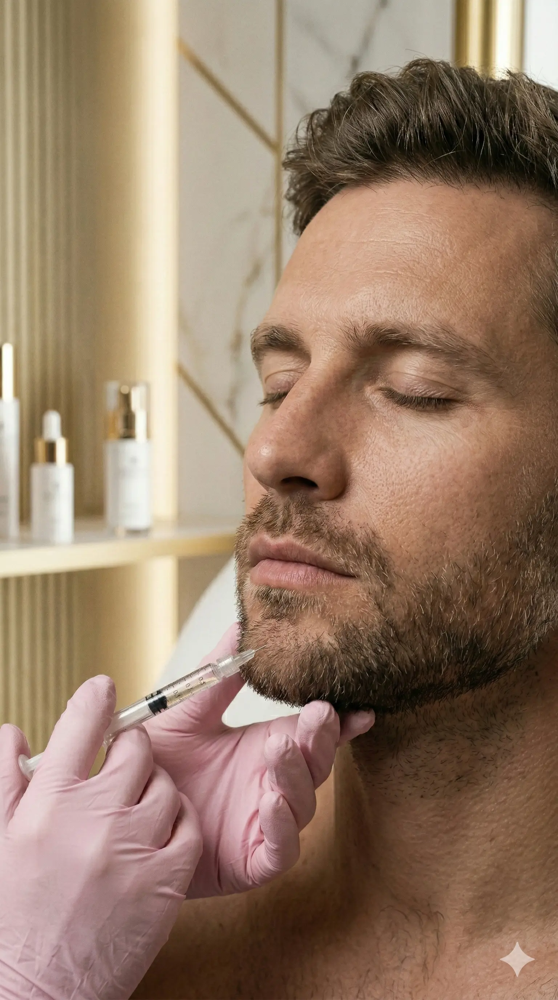

Pele
A revolução dos Bioestimuladores de Colágeno
Entenda como esses tratamentos estimulam a produção natural de colágeno, devolvendo a firmeza e a juventude da pele de forma progressiva e natural.
Ler artigo
A Essência da
Harmonização facial que reposiciona os tecidos e rejuvenesce com extrema naturalidade. Resultados tangíveis e imediatos.
Do primeiro contato ao resultado final, cada etapa é planejada para que você se sinta segura, acolhida e confiante.
Analisamos sua anatomia facial, a qualidade da sua pele e, acima de tudo, os seus desejos e expectativas.
Criamos um plano de tratamento exclusivo, explicando cada etapa, produto utilizado e resultado esperado.
Realizamos o tratamento com máximo conforto, segurança e as técnicas mais avançadas do mercado.
Mantemos contato próximo para garantir sua recuperação ideal e a satisfação com os resultados obtidos.




Rejuvenescimento
Bioestimuladores de Colágeno
Nossos tratamentos buscam a harmonia facial, respeitando suas características únicas. Acreditamos que a verdadeira estética facial não altera quem você é, mas realça a sua melhor versão.


.jpeg)
.jpeg)
Formada pela Universidade Federal da Bahia e especialista em tratamentos faciais e corporais, a Dra. Lara Pires dedica sua carreira a entender a beleza de forma integral.
"Após anos atuando na medicina estética, o meu propósito sempre foi ressaltar o brilho escondido em cada face. Suavizar os sinais do tempo na pele e/ou embelezar quando há necessidade estrutural - sempre mantendo a naturalidade desses processos - são preceitos básicos na minha prática clínica."
Um ambiente pensado para o seu bem-estar, unindo tecnologia de ponta e acolhimento em cada detalhe.

.jpeg)
.jpeg)
.jpeg)

Ainda tem dúvidas?
Fale conosco no WhatsApp
Pele
Entenda como esses tratamentos estimulam a produção natural de colágeno, devolvendo a firmeza e a juventude da pele de forma progressiva e natural.
Ler artigo
Harmonização
Por que tratar o rosto como um todo entrega resultados muito mais harmoniosos e elegantes do que focar em áreas isoladas.
Ler artigo
Skincare
Descubra quais são os passos indispensáveis para maximizar os resultados dos seus tratamentos estéticos e manter a pele saudável.
Ler artigo